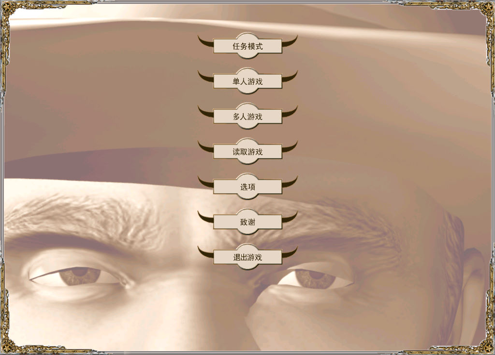
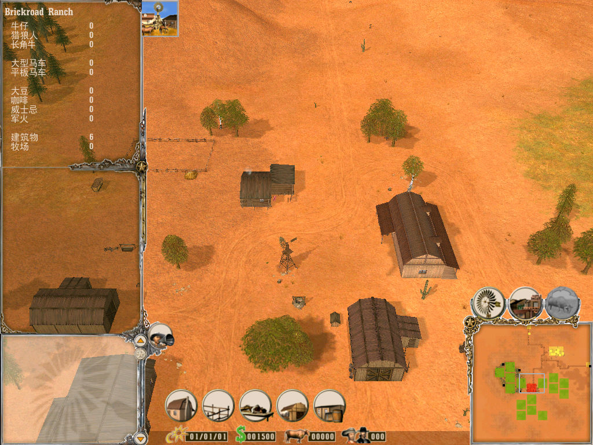

名稱：農場霸主／碧血狂沙：遙遠的西部 (Far West，簡中／英文版)
簡介：Greenwood 2002年出品的農場建造經營模擬遊戲，由JoWooD代理發行，2003年由北京
娛樂通簡中化並代理發行 [待補]。


保護：英文版為光碟SecuROM 4.54，簡中版無保護（放入光碟才有背景音樂）
備註：執行時，工作目錄必須是在安裝目錄的根目錄。
檔案：FarWest_Patch_1_01.rar = 1.01更新檔
nocd.rar = 英文免光碟檔